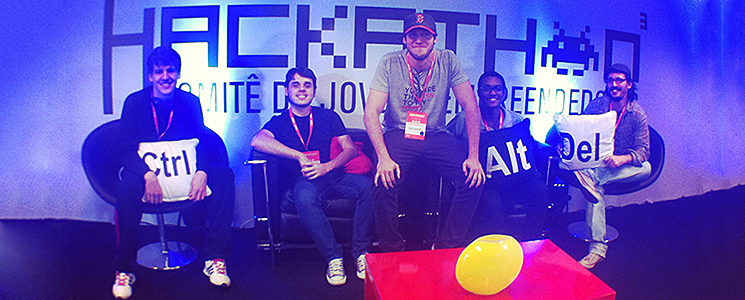

A INSTITUIÇÃO
A Faculdade nasceu da percepção de um Grupo, que desde 1998 é referência em TI, Gestão e Design, para suprir a falta de mão de obra especializada do mercado de tecnologia e oferecer uma formação completa e multidisciplinar aos alunos. Com a missão de levar o estado da arte em matéria de tecnologia de ponta às empresas e formar profissionais capazes e competentes, a Faculdade DezImpaata oferece cursos de Graduação, Pós-Graduação, Extensão e MBA, ministrados por mestres e doutores com experiência de mercado, que preparam os estudantes para a realidade do mercado de trabalho e proporcionam uma educação comprometida com a ética, a cidadania, o conhecimento e o atendimento às necessidades contemporâneas, por meio de uma estrutura educacional inovadora e diferenciada.
MISSÃO
Prover educação de alta qualidade, formando líderes e profissionais capazes de responder às demandas do mundo globalizado e contribuir para o progresso social e ambiental com espírito empreendedor e valores éticos.
VISÃO
Consolidar nossa posição de liderança no Ensino Superior em todas as áreas de conhecimento em que atuamos, formando o maior número de profissionais diferenciados, por meio da excelência acadêmica, inovação e internacionalidade.
VALORES
- Paixão
- Respeito à Diversidade
- Trabalho em Equipe
- Inovação
- Foco em Resultado
- Responsabilidade Social e Ambiental
- Ética e Transparência
NOTÍCIAS

Alunos da Faculdade DezImpata vencem a 6.ª edição do Hackathon da FIESP Universidade lança série de vídeos tutoriais para alunos Está chegando a 9ª Feira de Carreiras e Recrutamento da DezImpataVeja Mais
DEPOIMENTOS DE EX ALUNOS
"Minha relação com a universidade é de envolvimento e crescimento no processo de educação, incentivada pela visão empreendedora da instituição.”
Fernanda Costa“A DezImpata, para mim, significa seriedade e inovação nas propostas. Um terreno fértil onde bons projetos e idéias têm espaço para crescer.”
Gustavo Mello“Identifico-me com a missão, valores e princípios da universidade. Destaco as características inovadoras da DezImpata, sempre à frente das exigências da sociedade e do mercado."
João Carlos Nascimento"A DezImpata é responsável pelo meu profissionalismo. Com a minha dedicação ampliei meu campo profissional e meu espírito empreendedor. Aqui é minha segunda casa!”
Amanda AlbuquerqueCopyright © 2017 - Faculdade DezImpata